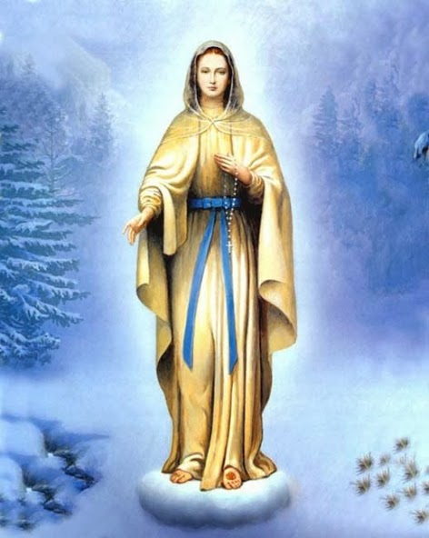

"NOSSA SENHORA DE BANNEUX"





"ESCREVER SOBRE A SANTÍSSIMA VIRGEM MARIA, É CULTIVAR UM IMENSO PRAZER DE RECORDAR A MÃE QUERIDA E MUITO AMADA DE TODOS NÓS, REPLETA DE TERNURA E DE INFINITA BONDADE, QUE PRAZEROSAMENTE ESPARGIU O SEU CAUDALOSO E PROFUNDO AMOR EM BANNEUX, NA BÉLGICA, COMO TAMBÉM DERRAMOU E ESPARGE EM TODAS AS PARTES DO MUNDO, ONDE AS PESSOAS ANSEIAM E SUPLICAM COM PROFUNDO RESPEITO E DEVOÇÃO, REVESTIDOS DA DIGNIDADE DE UMA POSTURA CRISTÃ, SINCERA E DEDICADA".
=ÍNDICE=
 -
PRELÚDIO
-
PRELÚDIO
-
AS APARIÇÕES DE NOSSA SENHORA
-
FOTOGRAFIAS + CONVITE + E-MAIL